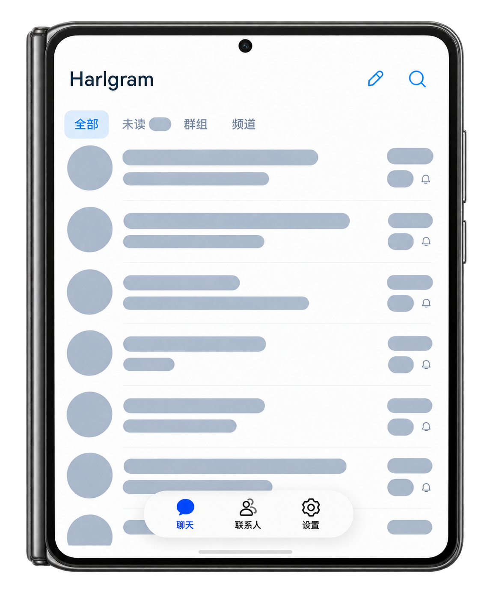
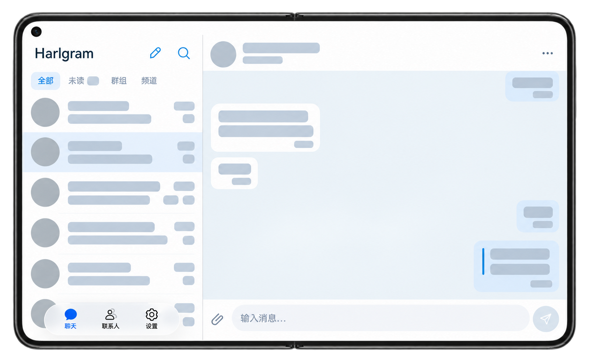

真实账号，真实连接
手机号、验证码、二步验证与邮箱验证；国家和区号独立选择，登录会话可恢复。
TDLib 认证状态驱动HARMONYOS NEXT / OPEN SOURCE
面向鸿蒙 HarmonyOS NEXT 的开源原生 Telegram 第三方客户端。用 ArkUI 呈现熟悉的聊天，用 TDLib 连接真实的 Telegram。
积极开发中 · 当前优先手机单栏体验

从界面到连接，原生实现。
01 / THE EXPERIENCE
核心链路已经接通。每项能力继续按真实协议、原生交互和设备证据推进。
手机号、验证码、二步验证与邮箱验证；国家和区号独立选择，登录会话可恢复。
TDLib 认证状态驱动真实头像、未读、联系人与收藏夹。已加载会话可搜索、筛选、置顶和静音。
本地筛选 · 非全局搜索文本收发、回复、编辑、单条转发与删除。长按菜单按服务端权限开放操作。
发送中、成功与失败分开呈现系统选图、发送前预览、单张图片收发，以及全屏查看、双击缩放和拖动。
选择图片后，由你确认发送文本草稿保存、历史分页、群发送者与日期。回复和编辑不覆盖原来的普通草稿。
完整富草稿与跨端边界仍在完善官方导航、菜单、弹层与玻璃底栏。浅色、深色或跟随系统，兼顾键盘和安全区。
原生 ArkUI · 无 WebView 外壳ON DEVICE / PURA X MAX
双栏布局的真机记录。当前仅完成该画面采集；展开、旋转和多窗口的持续交互仍待验证。

02 / WORK IN THE OPEN
SDK 26 构建、真实账号登录、文本和图片收发，以及部分消息操作的跨端核对。
先把单栏聊天、草稿、媒体和消息操作做好。功能以 Telegram Web A 手机界面为对齐基线。
服务器搜索、文件夹与归档、完整媒体、群管理、通知后台和通话，分阶段实现与验收。
AGENTS.md、架构文档、状态记录、脚本与测试，让 AI 和开发者可以有据可循地接力。它不表示把用户聊天上传给 AI；当前应用不提供 AI 聊天处理功能。
04 / MAKE IT YOURS
准备 DevEco Studio 与 HarmonyOS SDK 26，用脚本检查环境、构建原生依赖和应用。
git clone https://github.com/GaryChangCN/harlgram.git
cd harlgram
./scripts/setup.sh
# Configure your API credentials and DevEco signing locally.
./scripts/doctor.sh
bash -c 'source scripts/env.sh; ohpm install'
./scripts/build-tdlib.sh all
./scripts/configure-telegram.sh
./scripts/test-domain.sh
./scripts/build.shOPEN BY DESIGN
阅读源码、提交问题、完善文档，或认领一个可验证的功能。